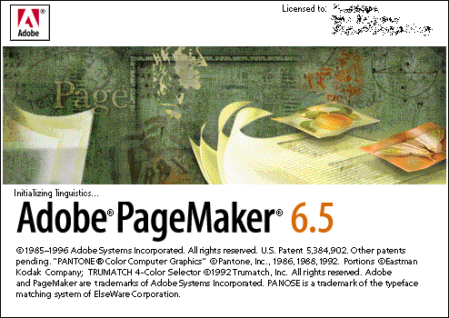
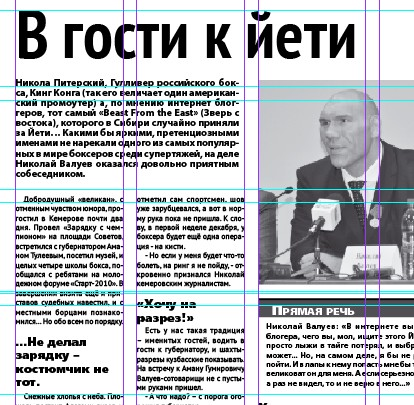

Первым моим более-менее профессиональным занятием, в котором компьютер был инструментом была верстка газет.
После института я пошел работать в издательский дом «Пресса Сибири», где несколько лет сначала изучал, а потом совершенствовал навыки работы в программе PageMaker. Тогда это был еще PageMaker 5-ой версии. Потом он вырос до более удобной 6.5

Потом профиль своей деятельности я решил резко изменить, чтобы опять вернуться в верстку через 3 года.
Приходилось верстать и справочники и еженедельные газеты с объявлениями и телепрограмму и новостные газеты и газеты со сканвордами. Много всего.
Шли годы и на смену Пэйджмэйкеру пришел Индизайн. По удобству он отличался на несколько порядков. Чего только стоит растягивание контента в колонках по вертикали. Штатный, к тому времени, верстальщик не смог продолжить работу, а хочешь сделать хорошо — сделай сам. Пришлось в течение недели разобраться и с Индизайном.
С тех пор верстка стала почти еженедельным занятием.

Поводом написать этот пост стал сегодняшний звонок от руководителя фирмы, с которой мы давно сотрудничаем. Они собираются выпускать газету, и попросили меня прислать резюме. Ну резюме, так резюме.